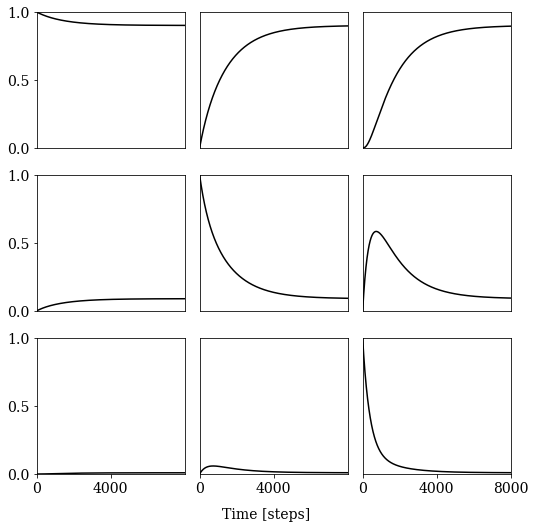

[1]:
import numpy as np
np.set_printoptions(suppress=True, precision=2)
import matplotlib.pyplot as plt
plt.rcParams["font.size"] = 14
plt.rcParams['font.family'] = 'serif'
import kineticmodel as k
[2]:
# simulation time and dt
tsteps = 8000
dt = 1 # step
time_axis = np.arange(tsteps) * dt
[3]:
well_depths = [
[30000, 10000],
[3000, 1000],
[300, 100]
]
connections = [100, 3, 10, 1, 3]
C, labels = k.build_metastable_counts(
well_depths,
connections
)
N, n_macro = C.shape[0], 3
print(C)
print(N, n_macro)
[[30000. 100. 0. 0. 0. 0.]
[ 100. 10000. 3. 0. 0. 0.]
[ 0. 3. 3000. 10. 0. 0.]
[ 0. 0. 10. 1000. 1. 0.]
[ 0. 0. 0. 1. 300. 3.]
[ 0. 0. 0. 0. 3. 100.]]
6 3
[4]:
# 1. Symmetrize count matrix
C_sym = k.symmetrize(C)
# 2. Convert counts into a transition probability matrix
TPM = k.tpm_from_counts(C_sym)
# 3. Build macrostate assignment matrix
assnt = k.assignment_matrix(labels)
print(assnt)
# 4. Get equilibrium populations
pi = k.equilibrium_populations(C)
print(pi)
[[1. 0. 0.]
[1. 0. 0.]
[0. 1. 0.]
[0. 1. 0.]
[0. 0. 1.]
[0. 0. 1.]]
[0.67 0.23 0.07 0.02 0.01 0. ]
[8]:
PAD = k.hummer_szabo_projector(assnt, pi)
dynamics = k.coarse_grained_dynamics(TPM, assnt, PAD, tsteps, axis="Tnn")
np.save("kineticmodel.npy", dynamics, allow_pickle=True)
[9]:
k.plot_coarse_grained_dynamics(time_axis, dynamics, n_macro, tsteps, save=True)

[ ]:
[ ]: